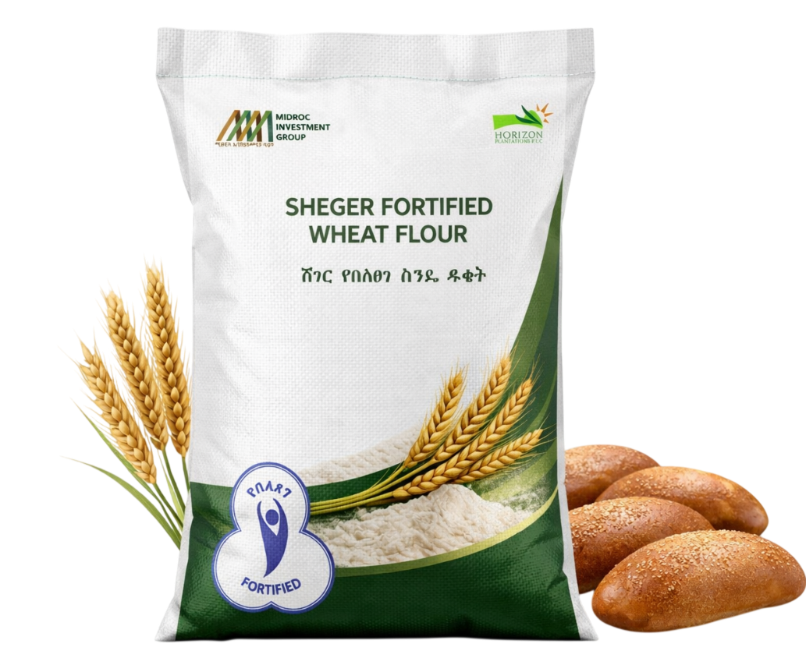
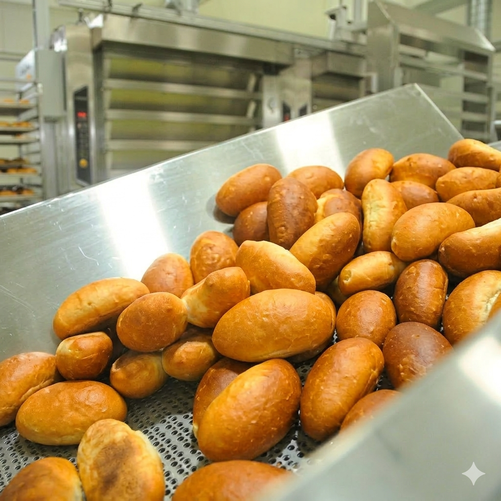
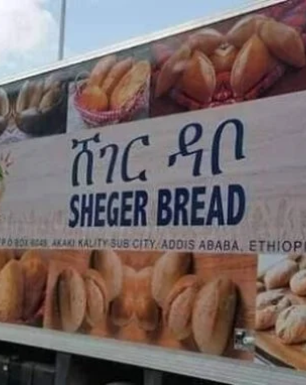
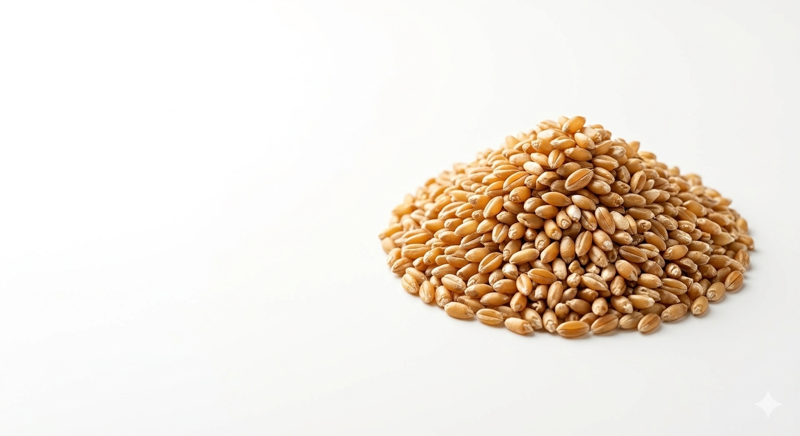

የአዲስ አበባ ነዋሪ
ሸገር ምርቶች በጥራታቸው እና በተደጋጋሚ አቅርቦታቸው የሚታወቁ ናቸው።
የደንበኛ አስተያየት
ሆራይዘን ፕላንቴሽንስ • ቃሊቲ፣ አዲስ አበባ
ትኩስ የሸገር ዳቦ (Sheger Dabo) እና ጥራት ያለው የተጠናከረ የሸገር ዱቄት (Sheger Duket / Sheger Flour) ለአዲስ አበባ ማህበረሰቦች በተመጣጣኝ ዋጋ በዘመናዊው የሸገር ፋብሪካ ተመርቶ ይቀርባል።
ምርቶችን ይመልከቱ


በአጭሩ
የሸገር ዳቦ እና ዱቄት ፋብሪካ (Sheger Factory) በ Horizon Plantations PLC ስር የሚሰራ ተቋም ሲሆን ለአዲስ አበባ ማህበረሰብ ጥራት ያለው የተጠናከረ የሸገር ዱቄት (Sheger Duket) እና ትኩስ የሸገር ዳቦ (Sheger Dabo) በተመጣጣኝ ዋጋ ለማቅረብ ይሰራል፤ የምግብ ደህንነትና ጥራትን በቀዳሚነት ያረጋግጣል።
ተጨማሪ ይመልከቱየሸገር ዳቦ የአዲስ አበባ ከተማ አስተማማኝና ተወዳጅ የዕለት ምግብ ነው። በቃሊቲ በሚገኘው ግዙፍና ዘመናዊ ፋብሪካችን በከፍተኛ የምግብ ደህንነት ደረጃ በየቀኑ በሺዎች የሚቆጠሩ ትኩስ ዳቦዎች ይጋገራሉ። ተልዕኳችን እያንዳንዱ የከተማዋ ቤተሰብ ተመጣጣኝና የተመጣጠነ ምግብ በቀላሉ እንዲያገኝ ማስቻል ነው።
ግዙፍ የማምረት አቅም ያለው በመሆኑ በከተማዋ ሱቆችና ቤተሰቦች ዘንድ ያልተቋረጠ አቅርቦት ይኖራል።
የህብረተሰቡን ኑሮ ለመደገፍና የዋጋ ንረትን ለማረጋጋት በተመጣጣኝ ዋጋ የቀረበ።
በ11ዱም ክፍለ ከተሞች በማዘጋጃ ቤት ኪዮስኮች፣ ሸማቾች ማህበራት እና አከፋፋዮች በኩል ይሰራጫል።
በቫይታሚን B ኮምፕሌክስ እና ዚንክ በበለፀገ ከፍተኛ ጥራት ባለው የተጠናከረ ስንዴ የተጋገረ።

የአዲስ አበባ ነዋሪ
ሸገር ምርቶች በጥራታቸው እና በተደጋጋሚ አቅርቦታቸው የሚታወቁ ናቸው።
የደንበኛ አስተያየት
በላይነሽ በለጠ
ዳቦው ለስላሳ ነው፣ ጥራቱም የተረጋገጠ ነው። ዱቄቱም ለእንጀራ በጣም ጥሩ ነው።
ናትናኤል መልካሉ
5 ኪሎ ዱቄቱን ሞክሬዋለሁ፤ ለቤተሰባችን በጣም ተስማሚ ነው።
የአካባቢ ንግድ ባለቤት
አቅርቦቱ የተረጋጋ ነው፣ ደንበኞችም ሸገርን በስም ይጠይቃሉ።
ለምግብ ሽያጭ ወይም ስርጭት የሚያስፈልግ ህጋዊ የንግድ ፈቃድ ይያዙ።
ሰነዶቻችሁን ያቅርቡ፤ በ3-5 የስራ ቀናት ውስጥ ምላሽ እንሰጣለን።
በቃሊቲ ያለውን ፋብሪካችን በመጎብኘት ምዝገባውን ያጠናቁ።
የመጀመሪያ ትዕዛዝዎን ያስገቡ እና ከቡድናችን ጋር ስርጭት ያቀናብሩ።
ስለ ሸገር ዳቦ (Sheger Dabo)፣ ዋጋ፣ ማከፋፈያ ቦታዎች እና አጋርነት ማወቅ የሚፈልጓቸው ዝርዝሮች።
የሸገር ዳቦ በሆራይዘን ፕላንቴሽንስ ስር በሚገኘው የሸገር ዳቦ እና ዱቄት ፋብሪካ በከፍተኛ ጥራት እና በተመጣጣኝ ዋጋ የሚጋገር ትኩስ ዳቦ ነው። በተጠናከረ የስንዴ ዱቄት የሚዘጋጅ ሲሆን ለአዲስ አበባ ነዋሪዎች አስተማማኝና ጤናማ ዕለታዊ ምግብ ያቀርባል።
የሸገር ዳቦ በመላው አዲስ አበባ በሚገኙ 11ዱም ክፍለ ከተሞች በማዘጋጃ ቤት ኪዮስኮች፣ የሸማቾች ህብረት ስራ ማህበራት፣ የመንደር ሱቆች፣ ትምህርት ቤቶችና የመንግስት ተቋማት ውስጥ ይሰራጫል።
የሸገር ዳቦ የተቋቋመው የዳቦ ዋጋን ለማረጋጋት እና የህብረተሰቡን ኑሮ ለመደገፍ ነው። ዘመናዊ አውቶሜትድ ማሽኖችን በመጠቀም በየቀኑ ከ1.5 ሚሊዮን በላይ ዳቦ በማምረት የማምረቻ ወጪን በመቀነስ ለህዝቡ በፍትሃዊና ተመጣጣኝ ዋጋ እንዲደርስ ተደርጓል።
ህጋዊ የንግድ ፈቃድ ያላቸው ነጋዴዎች፣ ማህበራት እና ተቋማት በቃሊቲ የሚገኘውን ፋብሪካችንን በአካል በመጎብኘት በ4 ቀላል ደረጃዎች ተመዝግበው የጅምላ ምርትና የቀን ስርጭት መጀመር ይችላሉ።
በመላው አዲስ አበባ
የተረጋገጠ ምርት
በአዲስ አበባ ውስጥ
የተሰጠ የደንበኛ እገዛ